Twelve augmented reality sculptures hidden across two Montreal parks, visible only through a phone screen. A collaboration between Samuel, Cryote, and Waxhead for MURAL Festival 2021.
Douze sculptures en réalité augmentée dissimulées dans deux parcs de Montréal, visibles uniquement à travers l’écran d’un téléphone. Une collaboration entre Samuel, Cryote et Waxhead pour le Festival MURAL 2021.
Using the MURAL Festival mobile app, visitors to Parc du Portugal and Parc des Amériques could discover life-size digital sculptures—up to twelve feet tall—anchored to specific locations throughout the parks. The works were invisible to the naked eye; only by pointing a phone at the right spot did the creatures and forms reveal themselves, layered onto the real landscape in real time.
Grâce à l’application mobile du Festival MURAL, les visiteurs du Parc du Portugal et du Parc des Amériques pouvaient découvrir des sculptures numériques grandeur nature, atteignant jusqu’à douze pieds de haut, ancrées à des emplacements précis dans les parcs. Les œuvres étaient invisibles à l’œil nu : ce n’est qu’en pointant un téléphone au bon endroit que les créatures et les formes se révélaient, superposées au paysage réel en temps réel.
Samuel coordinated the AR program: technical setup, spatial placement, app integration, and artistic direction. The works by Cryote drew on his signature organic, nature-inspired forms. Those in the Parc du Portugal took inspiration from azulejo—the decorative ceramic tiles found in Portuguese architecture—while the Parc des Amériques pieces were given carte blanche. Waxhead contributed his iconic character-driven creatures.
Samuel a coordonné le programme de réalité augmentée : mise en place technique, positionnement spatial, intégration à l’application et direction artistique. Les œuvres de Cryote puisaient dans ses formes organiques caractéristiques, inspirées de la nature. Celles du Parc du Portugal s’inspiraient de l’azulejo, ces carreaux de céramique décoratifs propres à l’architecture portugaise, tandis que celles du Parc des Amériques bénéficiaient d’une carte blanche. Waxhead a apporté ses créatures emblématiques axées sur le personnage.
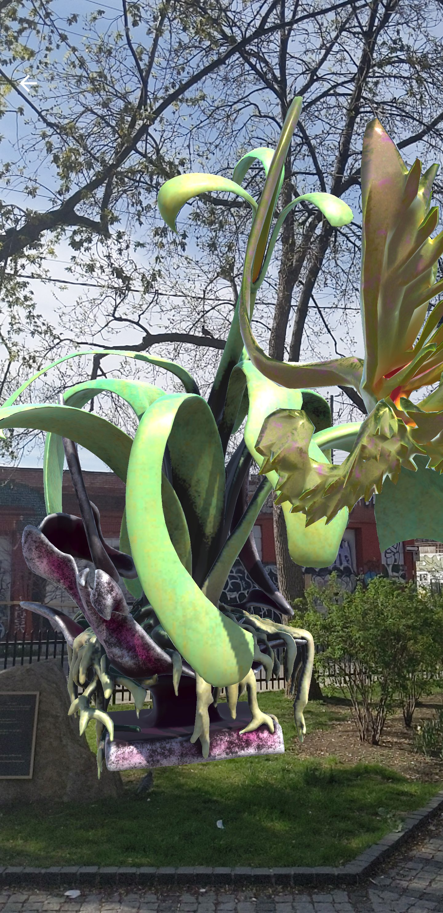
The AR format inverted the usual relationship between public art and its audience. Rather than imposing a sculpture on a space, the works existed as a latent layer—present but invisible until discovered. Visitors wandered the parks with phones raised, hunting for creatures perched on gazebos, emerging from hedges, or hovering above the cobblestones.
Le format de réalité augmentée inversait le rapport habituel entre l’art public et le spectateur. Plutôt que d’imposer une sculpture à un espace, les œuvres existaient comme une couche latente, présente mais invisible jusqu’à sa découverte. Les visiteurs parcouraient les parcs, téléphone levé, à la recherche de créatures perchées sur les kiosques, surgissant des haies ou flottant au-dessus des pavés.
The effect was uncanny: a twelve-foot creature would appear on screen exactly where you were standing, casting shadows and occupying space, yet completely absent to anyone walking past without the app.
L’effet était troublant : une créature de douze pieds apparaissait à l’écran exactement là où l’on se tenait, projetant des ombres et occupant l’espace, tout en restant totalement absente pour quiconque passait sans l’application.
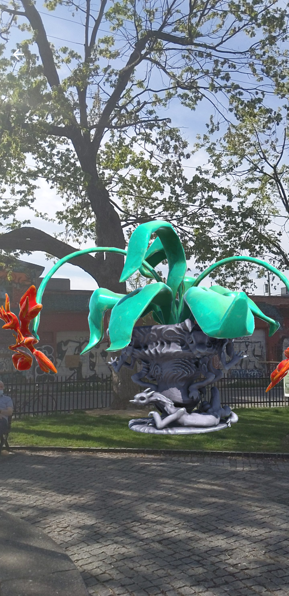
Twelve-foot creatures perched on gazebos and emerging from hedges—visible only through a phone screen. Public art as a hidden layer.
Des créatures de douze pieds perchées sur les kiosques et surgissant des haies, visibles uniquement à travers l’écran d’un téléphone. L’art public comme couche cachée.
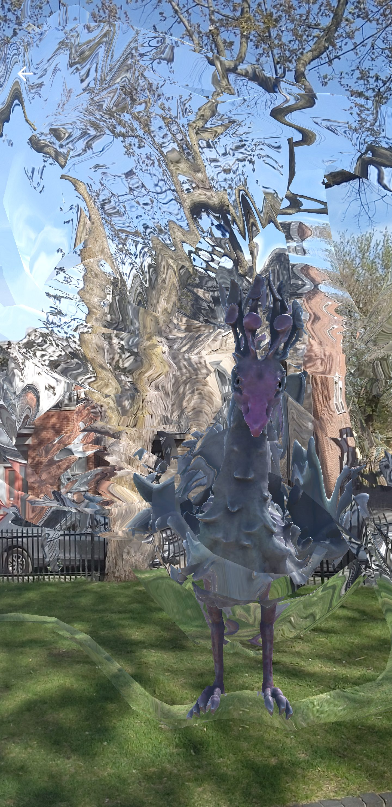
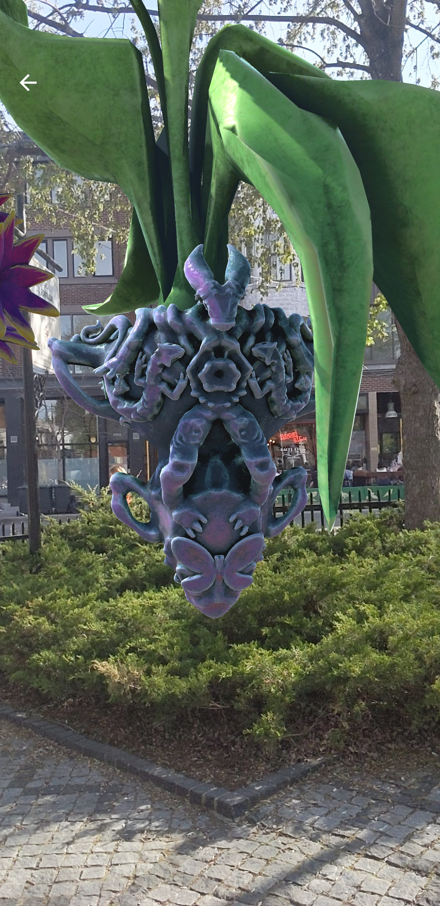
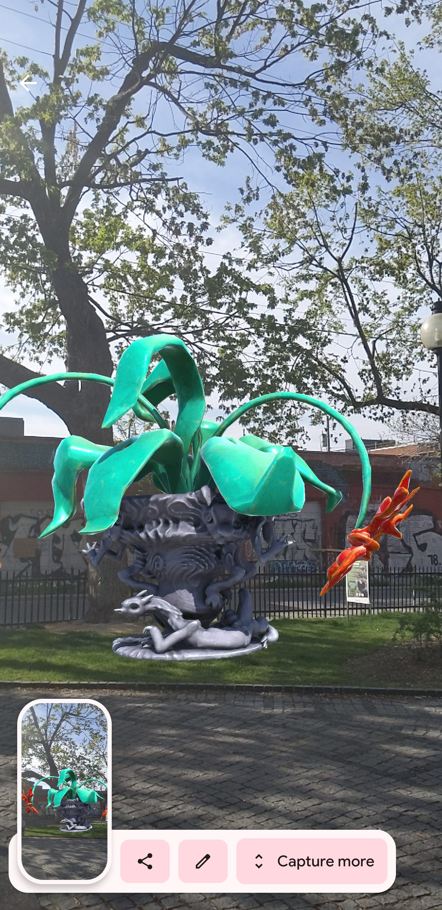
For the Parc des Amériques installations, Samuel created a swirling metallic sculpture that wrapped around the park’s stone archway—tendrils rising from the ground, threading through the gateway, and spreading into the sky above. The piece played on the relationship between the permanent architecture and the invisible digital layer, using the arch as both anchor and frame.
Pour les installations du Parc des Amériques, Samuel a créé une sculpture métallique tourbillonnante qui enlaçait l’arche de pierre du parc : des vrilles s’élevant du sol, se faufilant à travers le portail et se déployant dans le ciel. L’œuvre jouait sur le rapport entre l’architecture permanente et la couche numérique invisible, se servant de l’arche à la fois comme ancrage et comme cadre.
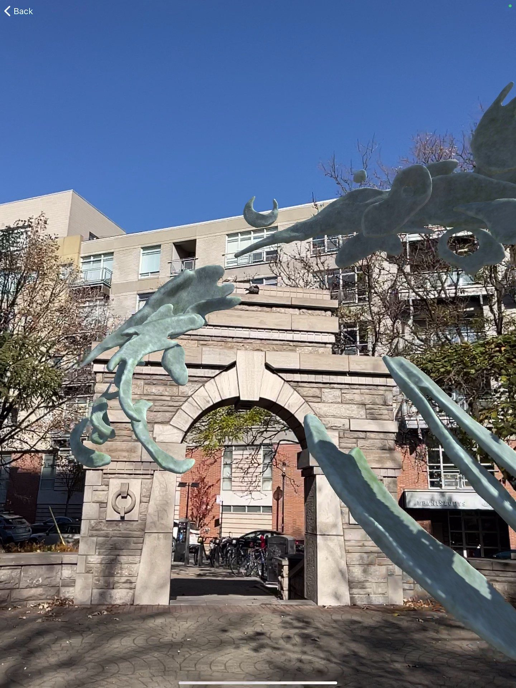
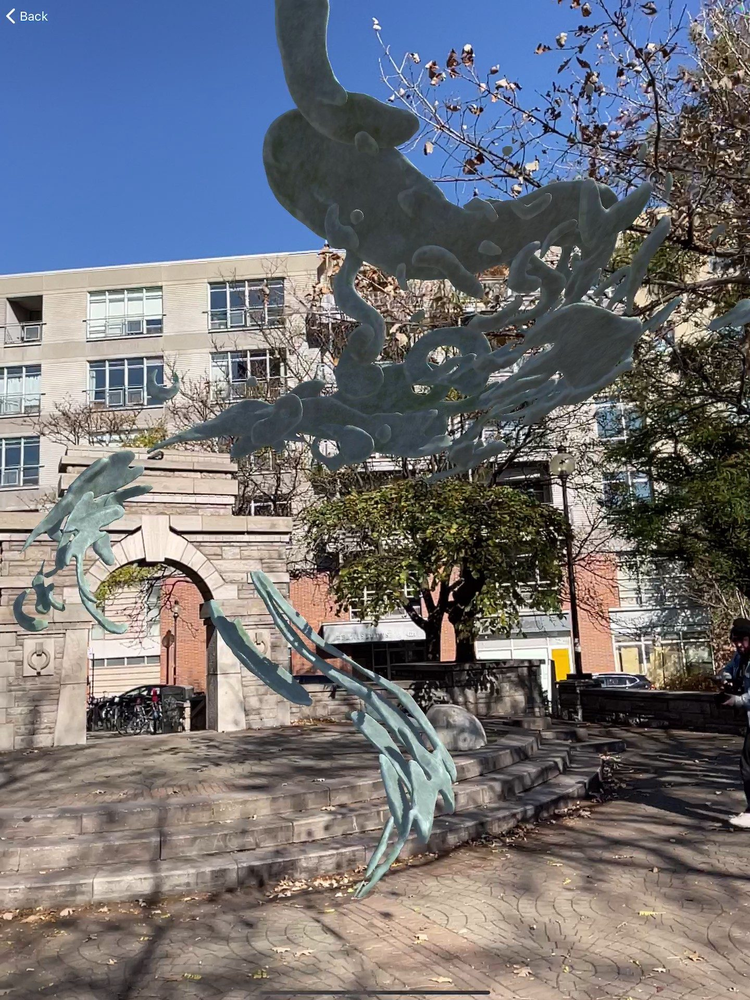
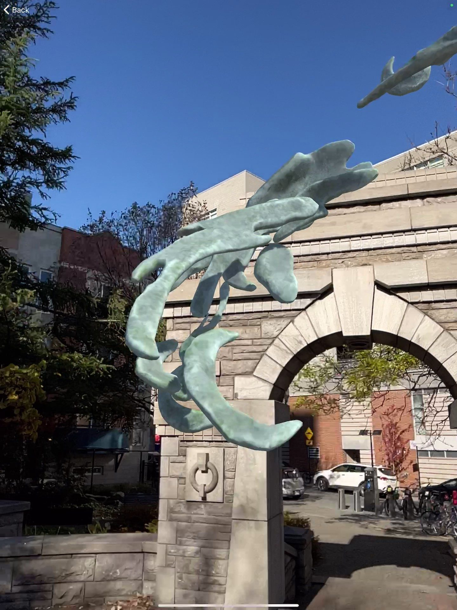
Waxhead contributed his signature character-driven creatures—bold, painted forms with expressive faces placed throughout both parks. A pink stacking figure with closed eyes perched on a tree stump, a teal face with rainbow eyes, and a green teardrop shape, each bringing Waxhead’s unmistakable hand-painted style into augmented reality.
Waxhead a apporté ses créatures signature axées sur le personnage : des formes peintes et affirmées aux visages expressifs, disposées dans les deux parcs. Une figure rose empilée aux yeux fermés perchée sur une souche d’arbre, un visage turquoise aux yeux arc-en-ciel et une forme en goutte verte, chacune transposant dans la réalité augmentée le style peint à la main inimitable de Waxhead.
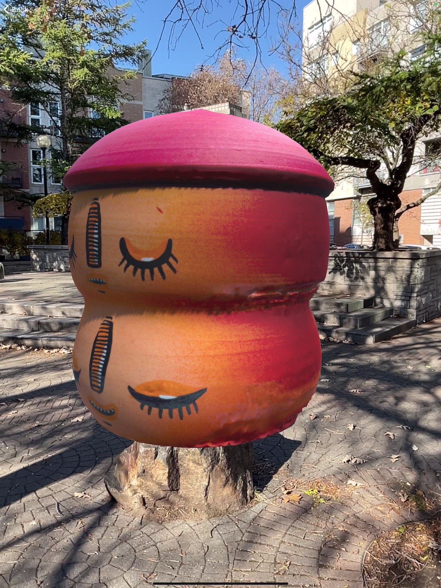
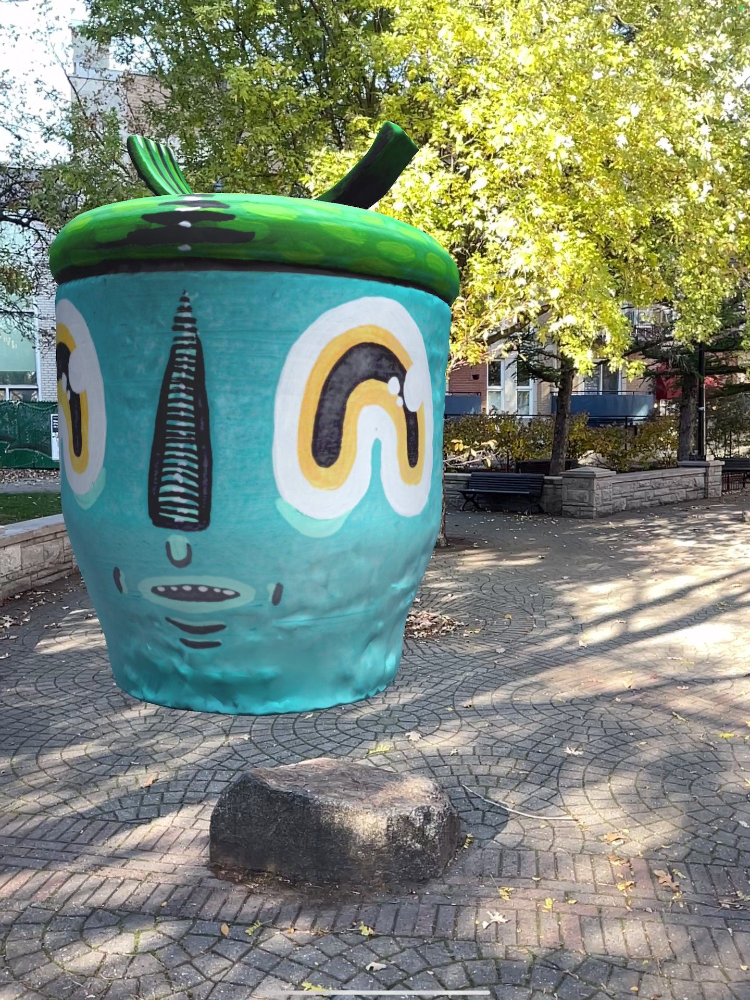
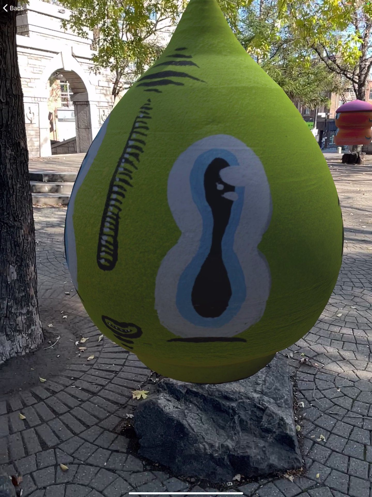
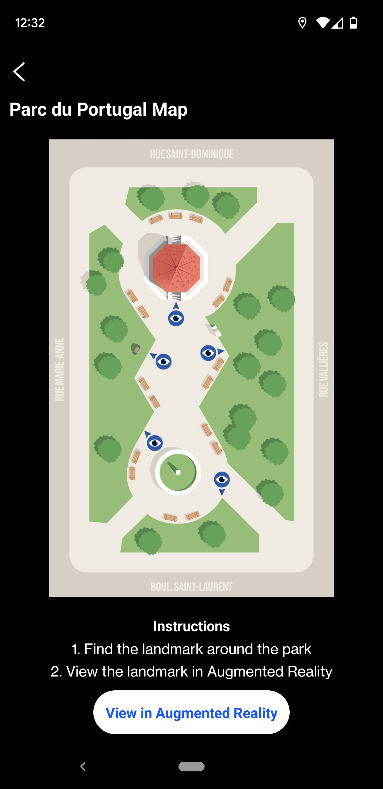
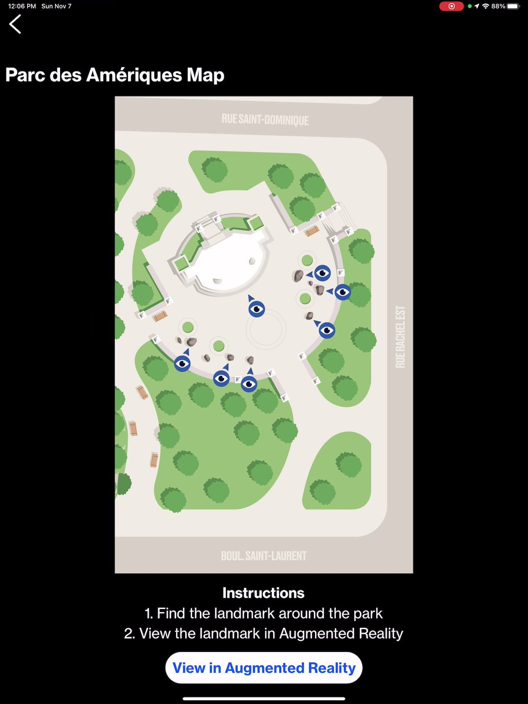
The AR gardens were covered by La Presse and Radio-Canada as a highlight of the 2021 festival, which ran August 12–22. Wall2Wall Montreal described the VR/AR program—featuring Cryote, Waxhead, Samuel, and Iregular—as a defining innovation of the edition.
Les jardins AR ont été couverts par La Presse et Radio-Canada comme un moment fort du festival 2021, qui s’est tenu du 12 au 22 août. Wall2Wall Montreal a décrit le programme VR/AR, réunissant Cryote, Waxhead, Samuel et Iregular, comme une innovation marquante de l’édition.
The program ran alongside the VR Graffiti Projection, where the same group of artists painted live in Kingspray with their work projected onto building walls. Together, the VR and AR programs established MURAL’s first major incursion into virtual public art.
Le programme se déroulait parallèlement à la Projection de graffiti VR, où le même groupe d’artistes peignait en direct dans Kingspray, leurs œuvres étant projetées sur les murs des immeubles. Ensemble, les programmes VR et AR ont marqué la première incursion majeure de MURAL dans l’art public virtuel.